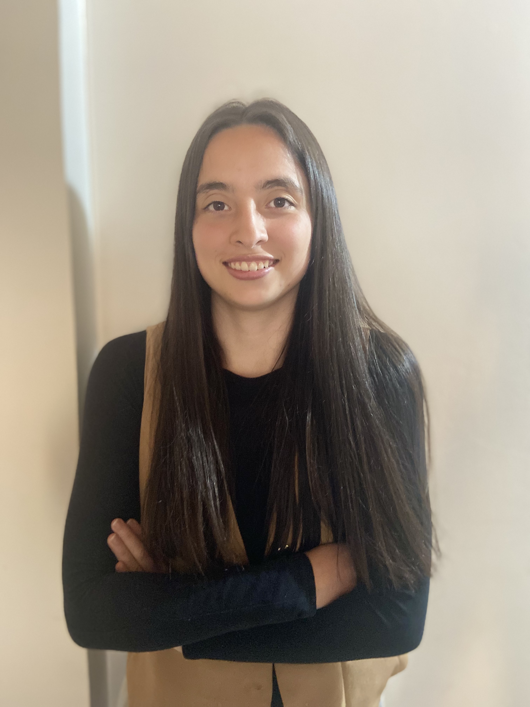
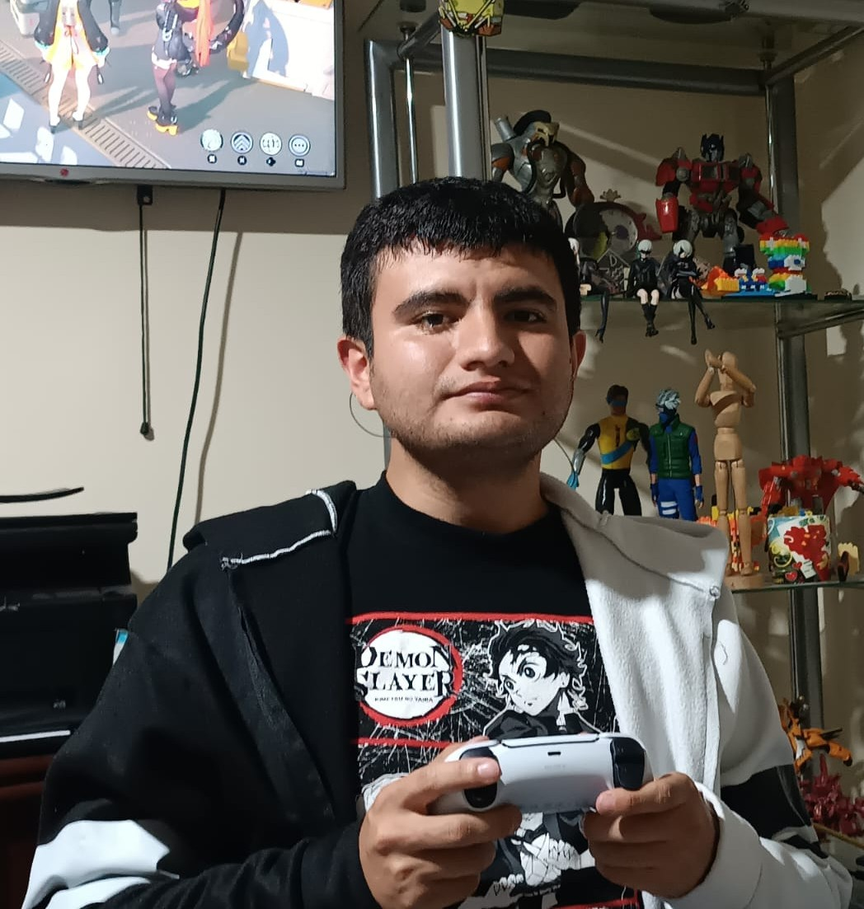

Nuestra Identidad Corporativa
🎯 Misión
Desarrollar propuestas de mejora y automatización en procesos de manufactura, aplicando conocimientos de ingeniería para analizar, optimizar y plantear soluciones viables basadas en información real, con énfasis en eficiencia operativa, seguridad y organización de planta.
🔭 Visión
Llevar a cabo de manera exitosa el diseño y la estructuración de una propuesta de automatización para líneas de producción, integrando herramientas de ingeniería y criterios técnicos que permitan plantear soluciones eficientes, realistas y aplicables a entornos industriales.
El Equipo Consultor
Ariadna Contreras Nossa
Perfil: Gerente Ejecutiva.
Dirección estratégica del proyecto, definición de procesos (DOP) y supervisión de hitos semestrales.
📁 Ver GitHubJohan Camilo Patiño Mogollon
Perfil: Gerente de Proyectos y Relaciones.
Gestión del repositorio técnico, actualización del sitio web y documentación de flujos mediante VSM.
📁 Ver GitHubEsteban Durán Jiménez
Perfil : Líder de Diseño.
Construcción de modelos en Plant Simulation, diseño conceptual de celdas y validación de layouts.
📁 Ver GitHub
Juliana Góngora Rasmussen
Perfil: Líder de Diseño.
Desarrollo de diagramas de análisis (DAP), soporte en simulación y evaluación de desempeño del sistema.
📁 Ver GitHub
Julián David Pulido Castañeda
Perfil: Gerente de Automatización.
Programación de lógica Ladder, configuración de sistemas SCADA e integración de comunicación OPC.
📁 Ver GitHubOscar Jhondairo Siabato Leon
Perfil: Gerente Financiero.
Análisis financiero de la propuesta, desarrollo de presupuestos detallados y cálculo de indicadores (TIR/VPN).
📁 Ver GitHub